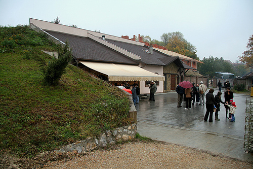
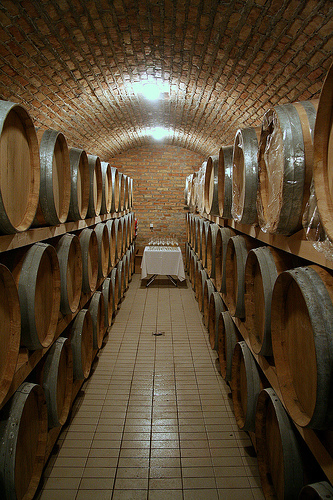
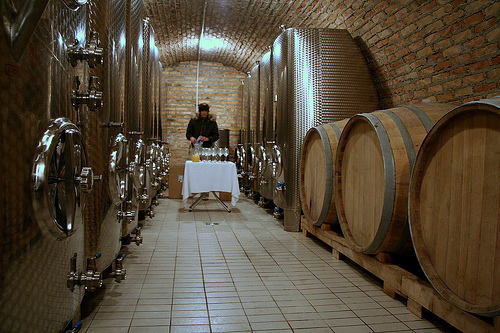
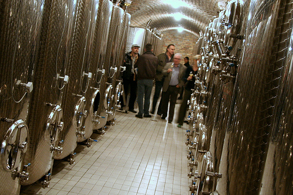
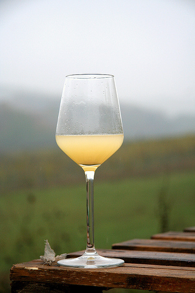
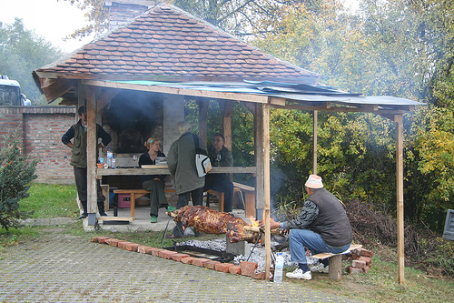

Vinogradi i podrumi Jelić u Bujačiću kod Valjeva organizovali su svečanost povodom završetka dobre berbe u valjevskim vinogradima i uspeha koje je vino iz vinarije Jelić ove godine ostvarilo na mnogobrojnim izložbama i takmičenjima. U umetničkom programu učestvovali su glumac Nenad Jezdić, voditelj Mića Orlović, kvartet „MISS“ i orkestar „Bairska noć“.
To je zvanična vest, a budući prisutna, 1/3 yahti ekipe se tačno u podne nacrtala i malo promuvala po podrumu, gužvi i okolišu, i samo zbog obaveza (Sveta Petka) nije ostala do večernjih sati, da uz pesmu, igru, jelo i i-te-kakvo piće proslavi sa domaćinima i gostima ovaj uspeh Tamuza Jelić.
Vreme već danima nikakvo... Ovo je podrum, sa lepom vizurom prema Petnici.
Za odležavanje crnog vina koristimo vekovima proveren model barrique buradi Bordeaux tipa od 225 litara. Precizno i trpeljivo obradjena hrastovina daje vinu mekoću, stvara u njemu taninsku harmoniju, dodaje bouquetu popularnu aromu vanile i zaokružuje vino kao celinu.. Pretpostavljam da se ovaj opis sa zvaničnog sajta odnosi na ove buriće
Na početku svečanosti služila se - šira.
Uskoro su se prikazali i prvi nakrivljeni (šta je bilo do uveče, ne znam)
Na žalost, nisam dočekao pravo vino...
Naravno, neizbežna životinja
...i neke poznate ličnosti...
Comments (6)
Sherlok Holmes?
Posted by kiko | 28.10.07 17:46
Posted on oktober 28, 2007 17:46
:) glavom i bradom
Posted by ljube | 28.10.07 17:54
Posted on oktober 28, 2007 17:54
chula sam da je vino lepo, jesi ga pio?
a tko je vodio taj zabavni program?
kakva ekipa! super ti ova fotka sa sherlokom u zamahu)
Posted by redsandra | 28.10.07 17:57
Posted on oktober 28, 2007 17:57
nisam jos uspeo. kiko, ti si pio?
zabavni program - mica orlovic, jezdic, amidza (onaj sa pinka)
Posted by ljube | 28.10.07 18:11
Posted on oktober 28, 2007 18:11
Pio, pio... Pinot noir rose i Moravu. Taj rose nije los, samo sto mi je falilo jos jedno 15tak stepeni celzijusa i neki rostilj. Morava (domaca sorta, mesavina rizlinga i nekih drugih italijanskih) je odlicna!
Posted by kiko | 28.10.07 20:07
Posted on oktober 28, 2007 20:07
To je ovaj događaj: http://www.blic.co.yu/reportaza.php?id=17722
Posted by La Lara | 29.10.07 10:35
Posted on oktober 29, 2007 10:35